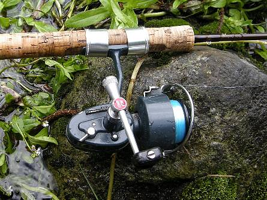

私のお気に入り
釣り道具 スピニングリール Mitchell 409/408
初めてこのリールと出会ったのは、1980年、18歳の冬休み明け、豊橋市のときわ通りを出たすぐの角にあった小さな釣り道具屋であった。
16歳の春休みに父が買ってくれたダイワのスピニングリールとロッドを使ってルアー釣りにのめり込んでいた当時の私は、もっと良いリールと竿が欲しくなっていた。そこで豊橋に出てきたおりに、くだんの釣具店に入り、当時まだ30代くらいに見えた若い店主さんに勧められてカタログ上で見たのが最初の出逢いだった。その時に、このミッチェル409と、フェンウィックの4ft6inのワンピーススピニングロッドを注文し、二週間後に冬休み中の解体工事のバイト代を全部つぎ込んで購入した覚えがある。409の価格は13,000円ほどしたように思う。
以来27年愛用し、手入れと言えばグリスを差して柔らかな布で全体を拭くぐらいで、現在まで一度の故障もなくけなげに働いてくれている。当時やはりルアー釣りに没頭していた兄の使っていたアブのカーディナルには、右ハンドルモデルが無かったのでこっちに決めた覚えがある。

このリールの良いところは、
・全体として故障が少なく、頑丈である
・ベイル返しのスプリングの巻き数が多く、丈夫で、ここが壊れない
・ベイルの返りがフェザータッチで軽く、ハンドルを軽く回せばスムーズに返る
・リールの足の長さが適切で、人差し指がちょうどスプールに掛かり、フェザリングがやり易い
・ギヤ比が高く（6:1）、高速で巻き取りができる。スプール一杯にラインが巻いてある場合、一巻きで約76cmのラインを巻き取れる
・糸ヨレが少ない（と思う）
・スペアのスプールが付属している
・ドラグの調整がやり易く、効きも良い
・ハンドルのつまみの形状が秀逸で、実に指にフィットする
・ねじを緩めると、ハンドルの固定方向を反転させることが出来、収納に便利
・逆転防止のストッパーレバーの位置が適切で、操作し易い
・上記の優れた性能を包括した見事な機能美のデザインと色。長年使っていても、まったく飽きることなく、現在でも通用する形であると思う
数少ない欠点としては、ベイルアームの支持部やラインローラーの基部にラインが絡みやすいところが挙げられる。
2009年の7月は、叔父とルアー釣行に明け暮れたのだが、以前、ストッパーレバーを折ってしまったこともあり、このリールが致命的に壊れたらどうしようかと思いつつ、ネットオークションを覗いてみると、ちょうどその日に409の未使用品が出品されていたので、思わず雨後の岩魚のごとく飛びついて買ってしまった。
初代のフットナンバーは、K183 07 とあるので、製造年月は、アブマニアさんのサイトで調べると、1981年7月ということになるかと思われる。しかし、番号が６桁ではなく、５桁なのが不思議である。３桁目が消えてしまったのかもしれない。二代目のフットナンバーは、687455で、頭のアルファベットが無い。初代と二代目とを較べてみると、細部に違いがあり、どうもオークションで買った二代目の方が古いモデルのような気がする。二代目には、英文の取り扱い説明書が付いていた。
いずれにしても、細かいことを言い出すとキリが無いので、「釣るためのリール」として、初代、二代目とも、末永く愛用していきたいと思う。
追記：2019年の7月に、昔買った１台目の409の取扱説明書が押し入れの奥から出て来たので載せておきます。取り扱い、メンテナンスの参考にして下さい。

{kind=link}
{kind=link}
私のお気に入り 目次へ
サイトマップ
ホームへ
お問い合わせ